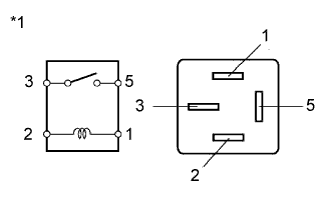

DTC C1761/61 Continuous Current to Compressor Motor |
| DTC Code | DTC Detection Condition | Trouble Area |
| C1761/61 | Either condition is met a total of 2 times or more with the engine switch on (IG):
|
|
| 1.CUSTOMER PROBLEM ANALYSIS |
Ask the customer about the vehicle and usage conditions when the DTC was stored.
| Points to confirm |
|
| NEXT | |
| 2.CHECK DTC |
Clear the DTC (Click here).
Start the engine and wait for 4 minutes or more.
Set the vehicle height to HI, wait until the vehicle height change is complete, and then return the vehicle height to normal.
Check the DTC (Click here).
| Result | Proceed to |
| DTC C1761/61 is output | A |
| DTC C1761/61 is not output | B |
| DTC C1761/61 and other DTCs are output | C |
|
| ||||
|
| ||||
| A | |
| 3.INSPECT AIR TUBE FOR AIR LEAK OR CLOG |
Inspect the air tube for air leaks or clogs (Click here).
|
| ||||
| OK | |
| 4.INSPECT NO. 2 HEIGHT CONTROL VALVE |
Turn the engine switch off.
Remove the No. 2 height control valve (Click here).
Measure the resistance according to the values in the table below.
| Tester Connection | Condition | Specified Condition |
| 1 (LH+) - 2 (E) | 15 to 25°C (59 to 77°F) | 17.5 to 21.5 Ω |
| 3 (RH+) - 2 (E) | 15 to 25°C (59 to 77°F) | 10 to 14 Ω |
| *a | Component without harness connected (No. 2 Height Control Valve) |
Check the leveling solenoid valve.
Connect the positive (+) lead of the battery to terminal 3 (RH+) and the negative (-) lead to terminal 2 (E).
Check the operating sound of the No. 2. height control valve
Check the gate solenoid valve.
Connect the positive (+) lead of the battery to terminal 1 (LH+) and the negative (-) lead to terminal 2 (E).
Check the operating sound of the No. 2. height control valve.
|
| ||||
| OK | |
| 5.INSPECT HEIGHT CONTROL COMPRESSOR (EXHAUST SOLENOID VALVE) |
Turn the engine switch off.
Remove the height control compressor (Click here).
Measure the resistance according to the value(s) in the table below.
| Tester Connection | Condition | Specified Condition |
| 2 (L) - 1 (B) | 20°C (68°F) | 10 to 14 Ω |
| *a | Component without harness connected (Exhaust Valve) |
Connect the positive (+) lead of the battery to terminal 2 (L) and the negative (-) lead to terminal 1 (B) of the solenoid valve connector. Then check that the valve makes an operating sound.
|
| ||||
| OK | |
| 6.INSPECT HEIGHT CONTROL COMPRESSOR (COMPRESSOR MOTOR) |
 |
Remove the height control compressor (Click here).
Apply 12 V battery voltage to the compressor motor and check the operation of the motor.
| Measurement Condition | Specified Condition |
| 12 V battery positive (+) voltage → Terminal 1 (B) 12 V battery negative (-) voltage → Terminal 2 (E) | Motor operates |
| *a | Component without harness connected (Height Control Compressor) |
|
| ||||
| OK | |
| 7.INSPECT SUSPENSION CONTROL RELAY (AIR SUS) |
Turn the engine switch off.
Remove the AIR SUS relay from the engine room relay block.
|  |
Measure the resistance according to the value(s) in the table below.
| Tester Connection | Condition | Specified Condition |
| 3 - 5 | 12 V battery voltage is not applied to terminal 1 and 2 | 10 kΩ or higher |
| 12 V battery voltage is applied to terminal 1 and 2 | Below 1 Ω |
| *1 | AIR SUS Relay |
|
| ||||
| OK | ||
| ||